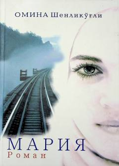

MNasroniy qiz Mariyaning eʼtiqod va muhabbat sinovlaridan oʻtgan hayot hikoyasi.
Bu roman turkiyalik adiba Omina Shenlikoʻgʻlining mashhur asari boʻlib, Germaniya va Turkiyada yashayotgan nasroniy qiz Mariyaning hayotini tasvirlaydi. Mariya dastlab irqchi boʻlsa-da, ikki musulmon yigit — Abdulvahhob va Mehmet bilan tanishib, oʻz dunyoqarashini oʻzgartiradi. Asar eʼtiqod, muhabbat va insoniy qadriyatlar mavzularini chuqur yoritadi.